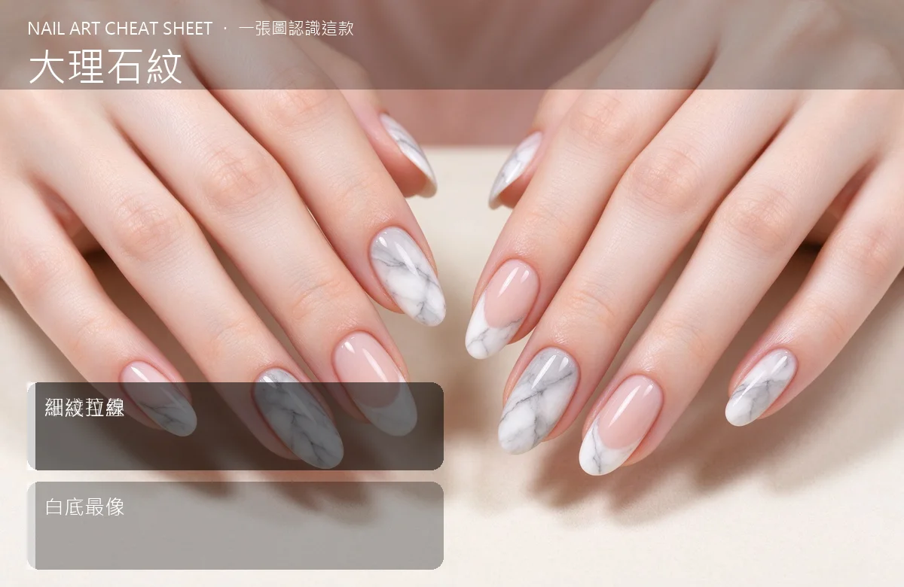

美甲大理石紋是什麼？中階入門攻略
大理石紋是把深淺灰白互相暈疊、再用細線拉出裂紋，做出像真大理石的高級感。
大理石紋原理與辨識重點：美甲師不說的深淺互疊
先在甲面上一塊淺色底，接著點幾滴深淺不一的灰色，趁未乾時用細筆把它們互相暈開，最後拉出幾道深色的細裂紋，就像大理石天然的紋路。
誰適合做大理石紋？高級感款對號入座
這套做法主要適合「高級感款」的場合與族群。如果你是韓系美甲的愛好者，或正處在中階階段的學習者，都很值得先把它認識起來——它會是你判斷其他款式的地基。
大理石紋美甲施作步驟：暈染＋細線
淺灰底 → 點深灰＋白 → 細筆暈開 → 拉細裂紋 → 照燈 → 封層。紋路不要太規則，越自然越像。
大理石紋優缺點分析：美甲持久度與傷甲評估
| 面向 | 說明 |
|---|---|
| 好上手 | 中階階段就能掌握，是韓系流派的入門招牌 |
| 辨識度高 | 靠「深淺互疊」一眼認得出，成品是大理石 |
| 變化多 | 可延伸出多種「高級感款」的變化款 |
| 注意 | 「深淺互疊」與包邊沒顧好，持久度會打折 |

大理石紋新手雷區：細紋拉線與常見錯誤
注意：裂紋畫得太對稱會像『蟲』不像石頭。記得紋路要有粗有細、有分岔，才真。
大理石紋和其他美甲做法的差別比較
大理石紋最常被拿來和「爆裂紋、動物紋」搞混。簡單分：大理石紋更執著在「深淺互疊」這一個細節上，而隔壁那幾種把重點放在別的地方——同一個美甲領域、不同的側重點，看多了自然分得開。
大理石紋美甲常見問題 FAQ
Q：初學者怎麼認識大理石紋？ A：先看大理石這個成品，找「深淺互疊」在哪裡，再對照上面的說明，重複兩三次就有直覺了。
Q：大理石紋和我平常做的美甲有什麼關係？ A：它是「高級感款」裡很常用的一環，很多韓系款式都吃它的技巧。會了它，你看美甲的判斷力會明顯變好。
Q：一定要買很貴的器材嗎？ A：不用。先用入門器材把「深淺互疊」練穩，再看要不要升級。技術永遠比器材重要。
Q：哪種場合最適合用大理石紋？ A：需要「高級感款」氛圍的場合最合適。日常或特殊活動都能駕馭，重點是配色與厚薄要掌握好。